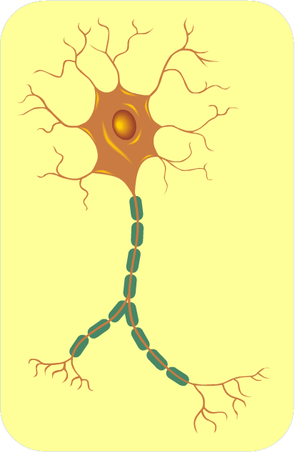

| HOMEPAGE | SISTEMI ED APPARATI | FASI DELLA VITA | ||
| HOMEPAGE | SISTEMI ED APPARATI | FASI DELLA VITA | ||
IL COMPITO DEL SISTEMA NERVOSO
Il sistema nervoso ha la funzione di ricevere le informazioni che provengono dall'ambiente in cui viviamo e dall'interno del nostro organismo, di elaborarli e interpretarli e di produrre quindi le risposte appropriate. Il sistema nervoso è anche la sede di funzioni psichiche complesse, come la memoria, l’apprendimento e le emozioni.
Ogni espressione della nostra personalità, ossia pensieri, speranze, sogni, desideri, emozioni, sono funzioni del sistema nervoso. Il sistema nervoso ci permette di interagire con l'ambiente che ci circonda. Il nostro sistema nervoso riceve ed analizza le informazioni che provengono dagli organi di senso e dirama ordini a tutti gli organi del nostro corpo.
Il sistema nervoso è la sede dell'assunzione, elaborazione e trasmissione delle informazioni relative a tutto il corpo umano, in altre parole è il sistema di regolazione delle funzioni corporee.
Tutti organi del sistema nervoso sono formati tutti da tessuto nervoso, costituito dai neuroni e dalle cellule della nevroglia. I neuroni sono raggruppati in circuiti e inviano messaggi da una parte del corpo all'altra attraverso segnali elettrici.
Il sistema nervoso viene suddiviso in Sistema Nervoso Centrale (SNC) e in Sistema Nervoso periferico (SNP).
SISTEMA NERVOSO CENTRALE (SNC)
Il SNC ha la funzione di integrare ed elaborare gli stimoli che arrivano attraverso il Sistema nervoso periferico (SNP). E' costituito dall'encefalo e dal midollo spinale.
Il sistema nervoso centrale è rivestito da 3 membrane, dette meningi. La membrana più esterna, detta dura madre, è spessa e robusta ed è situata a diretto contatto con le ossa (scatola cranica o vertebre) che contengono il SNC. La seconda, detta aracnoide, è più sottile e delicata ed è separata dalla membrana più interna da uno spazio pieno di liquido cefalo-rachidiano, di composizione simile alla linfa, che protegge l'encefalo dagli urti e favorisce lo scambio di sostanze con le cellule nervose (cessione di glucosio e assorbimento degli scarti). La membrana più interna, detta pia madre, è a diretto contatto con la superficie del SNC.
Midollo spinale
Il midollo spinale ha una forma approssimativamente cilindrica ed è contenuto nel canale vertebrale, delimitato dalle vertebre. Ha una lunghezza complessiva di circa 45 cm e si estende normalmente fino alla seconda vertebra lombare. Anche il midollo spinale, come l'encefalo, è protetto dalle 3 meningi (dura madre, aracnoide, pia madre).
Il midollo spinale è composto da una sezione interna di materia grigia (che assomiglia molto alla forma di una farfalla) ed è circondato da materia bianca. La sostanza bianca è costituita da fibre che mettono in comunicazione i vari distretti del corpo (attraverso i nervi) con il cervello.
Nella materia grigia sono presenti i corpi cellulari dei neuroni spinali e si distinguono due "corna anteriori" o ventrali e due "corna posteriori" o dorsali.
La materia bianca è suddivisa in 4 cordoni: uno anteriore (compreso tra corna anteriori), un posteriore (tra le corna posteriori) e due laterali. Il cordone anteriore (ventrale) è costituito da fibre motorie (via discendente), il posteriore (dorsale) da fibre sensoriali (via ascendente), i due laterali contengono sia fibre ascendenti (sensoriali) che fibre discendenti (motorie).
Dal midollo spinale fuoriescono 31 paia di nervi spinali. Ogni nervo spinale presenta due radici: la radice dorsale, che fuoriesce dalle corna posteriori che contiene fibre sensoriali, e la radice ventrale, che fuoriesce dalle corna anteriori e che contiene invece fibre motorie. Ogni nervo spinale ha pertanto una componente ascendente (sensoriale) e una discendente (motoria).
Nel midollo spinale ha sede l'arco riflesso, che rappresenta la risposta più immediata di un organismo ad uno stimolo.
I riflessi rappresentano il meccanismo più semplice con cui il sistema nervoso può dare una risposta pronta e adeguata a determinati stimoli: quando un muscolo si allunga (ad es. a seguito di una stimolazione sul tendine) questo tende a contrarsi per via riflessa.
L'arco riflesso monosinaptico coinvolge solo due neuroni. L'esempio classico è quello del riflesso patellare: in seguito ad una leggera percussione del tendine rotuleo (poco sotto il limite inferiore della rotula), si genera un impulso che causa l'estensione della gamba. Si tratta di un arco riflesso semplice, che avviene indipendentemente dalla nostra volontà. In questo fenomeno sono coinvolti solo due neuroni: il sensore presente nel muscolo riceve un impulso che invia, attraverso una fibra nervosa sensitiva, al midollo spinale. Qui l'impulso viene ricevuto da un secondo neurone, di natura motoria, che invia un impulso lungo una fibra motoria al muscolo che risponde quindi allo stimolo.
L'arco riflesso può essere complesso quando tra i due neuroni si inseriscono altri neuroni per "allungare" la catena trasmissiva e rendere più complesso il riflesso. La maggior parte dei riflessi sono complessi e rispondono anche a centri di elaborazione situati nell'encefalo.
SISTEMA NERVOSO PERIFERICO (SNP)
Il sistema nervoso periferico è costituito dai gangli nervosi e dai nervi periferici che collegano l'encefalo e il midollo spinale al resto del corpo.
Ha la funzione di trasmettere al sistema nervoso centrale le informazioni provenienti dall'ambiente esterno (esterocettori) e da tutte le parti del corpo (enterocettori e propriocettori) e di inviare ordini per eseguire delle azioni ai muscoli (sistema nevoso somatico) ed agli organi interni (sistema nervoso autonomo).
I gangli nervosi sono dei raggruppamenti di neuroni esterni al SNC, situati lungo i nervi.
I nervi sono le strutture caratteristiche del sistema nervoso periferico. Sono formati da fasci di assoni (provenienti da gruppi di neuroni) che trasportano informazioni da o verso il sistema nervoso centrale. Gli assoni sono rivestiti dalle guaine mieliniche delle cellule della nevroglia, che svolgono funzioni protettive, alimentari e di sostegno.
Ogni nervo contiene, inoltre, vasi sanguigni necessari per rifornire gli assoni e le cellule della nevroglia di ossigeno e nutrienti. Nel nervo sono presenti guaine di tessuto connettivo che si fanno via via più piccole, ricoprendo prima l'intero nervo (epinervio), poi fasci di assoni (perinervio) e singoli assoni (endonervio).
I nervi si distinguono in
ORGANI DI SENSO
Gli organi di senso ci permettono di interagire con il mondo circostante. Sono costituiti da recettori sensoriali (costituiti da terminazioni di cellule nervose) organizzati in strutture più o meno complesse, specializzate nella ricezione degli stimoli provenienti dall’esterno o dall’interno del nostro corpo, di trasformarli in impulsi nervosi e di trasmetterli al sistema nervoso centrale per la loro elaborazione.
IL TATTO
Il tatto, o senso tattile, ci permette di rilevare con straordinaria precisione la presenza di stimoli dovuti al contatto della superficie della pelle con oggetti esterni. Il senso tattile è diffuso sull'intera superficie del nostro corpo, ma le terminazioni nervose sono concentrate soprattutto in alcune zone: palmo della mano e dita, pianta del piede, labbra.
Il senso tattile è dovuto a diversi tipi di recettori specializzati che traducono i diversi tipi di pressione e contatto sulla pelle in stimoli nervosi che vengono inviati, attraverso i nervi, al midollo spinale e all'encefalo. Su ogni centimetro quadrato di pelle si trovano mediamente circa 130 recettori tattili: i recettori per il freddo, per il caldo, per il dolore, le cellule di Merkel e i corpuscoli di Meissner, di Ruffini e di Pacini.
L’OLFATTO E IL GUSTO
Olfatto e gusto non sono chiaramente separabili l'uno dall'altro e per molti aspetti si sovrappongono. L'olfatto è connesso in maniera funzionale con il gusto, come si può dimostrare semplicemente quando un raffreddore congestiona le vie aeree, compromettendo la funzione olfattiva, ed i cibi hanno pressoché tutti lo stesso sapore.
Entrambi sono dei sensi chimici, e sono in grado di rilevare la presenza di sostanze (naturali o artificiali) contenute nell'aria (olfatto) e nel cibo e nelle bevande (gusto).
In una piccola zona dell’epitelio che riveste la parte dorsale della cavità nasale si trovano tra i 10 ed i 20 milioni di recettori olfattivi, costituiti da neuroni bipolari. Un prolungamento è rivolto verso l'esterno e costituisce il recettore, l'altro è diretto in senso opposto e va a costituire il nervo olfattivo. I segnali inviati da questi neuroni giungono nel bulbo olfattivo del telencefalo (nei glomeruli olfattivi) e sono quindi inviati ad altre zone cerebrali (corteccia, ipotalamo) dove vengono elaborati ed interpretati.
L'UDITO
L'udito è un sistema estremamente complesso, il primo dei cinque sensi a svilupparsi nel feto e a permettere il contatto con il mondo. L'elemento chiave di questo sistema è l'orecchio, l'organo che ci permette di sentire i suoni. L'orecchio riceve e traduce i suoni in impulsi elettrici che vengono trasmessi per mezzo delle fibre nervose del nervo acustico all'encefalo, dove vengono analizzati ed interpretati.
L'orecchio è composto da 3 parti: l'orecchio esterno, l'orecchio medio e l'orecchio interno.
L'orecchio esterno è composto dal padiglione auricolare e dal condotto uditivo esterno. Il padiglione auricolare è l'unica parte visibile dell'orecchio, è costituito da cartilagine rivestita dalla pelle e presenta vari solchi e rilievi. La sua funzione è quella di raccogliere i suoni per convogliarli nel condotto uditivo. Il condotto uditivo esterno è a fondo cieco ed è delimitato dal timpano, una membrana molto sottile che separa l'orecchio esterno dall'orecchio medio.
L’orecchio medio contiene gli ossicini, le tre ossa più piccole del corpo umano: martello, incudine e staffa. Il martello è intimamente collegato da una parte alla membrana timpanica e dall'altra all'incudine, che a sua volta è collegata alla staffa che si appoggia alla membrana della finestra ovale dell'orecchio interno.
Le vibrazioni del timpano, provocate dai suoni, sono amplificate di circa venti volte da queste tre ossa, che le trasmettono al liquido contenuto nell’orecchio interno.
L'orecchio medio comunica con la faringe attraverso la tuba di Eustachio, che permette di equilibrare, "compensare", la pressione dell'aria tra orecchio medio ed esterno. La sensazione di "orecchie chiuse" che si avverte ad esempio salendo (o scendendo) da una montagna, scompare quando l'aria riesce ad uscire (o ad entrare) dall'orecchio medio attraverso la tuba di Eustachio.
Le onde sonore seguono questo percorso: sono convogliate dal padiglione auricolare verso il condotto uditivo esterno e quindi al timpano, che colpito dalle onde sonore vibra, trasmettendo le vibrazioni alla catena degli ossicini dell'orecchio medio, che amplificano queste vibrazioni di circa 20 volte. L'ultimo degli ossicini, la staffa, direttamente appoggiato alla finestra ovale dell'orecchio interno, trasmette le vibrazioni alla perilinfa contenuta nella coclea. Le vibrazioni si trasmettono quindi all'endolinfa contenuta nel dotto cocleare e vengono percepite dalle cellule cigliate (circa 10.000 in ogni orecchio) dell'organo del Corti, che le trasformano in impulsi nervosi, inviati al cervello attraverso il nervo acustico.
L'organo di senso statico è formato dall'utricolo, dal sacculo e dai canali semicircolari membranosi, contenuti nel vestibolo e nei canali semicircolari ossei, ed è unito all'encefalo dal nervo vestibolare dell'acustico.
L'utricolo è un sacchetto a pareti molto sottili. Sboccano in esso, per mezzo di piccoli orifizi, i canali semicircolari e il condotto endolinfatico. Il sacculo è una vescichetta rotondeggiante a pareti sottili, che si trova sotto all'utricolo. I canali semicircolari sono tre tubuli pieni di endolinfa, disposti nelle tre direzioni dello spazio.
Sul pavimento dell'utricolo e sulle pareti dei canali semicircolari si trovano le macule stato acustiche, dove si trovano i recettori cigliati, coperti da una cupola gelatinosa su cui poggiano gli otoliti, minuscoli cristalli di carbonato di calcio che permettono la percezione della posizione della testa e del corpo nello spazio.
LA VISTA
L'occhio è l'organo della vista, ricava informazioni sull'ambiente a noi circostante attraverso la luce. Il nostro occhio è un complesso sensore che raccoglie la luce proveniente dall'ambiente, ne regola l'intensità attraverso la pupilla, la mette a fuoco attraverso il cristallino per formare un'immagine sulla retina, dove viene trasformata in impulsi elettrici che attraverso il nervo ottico vengono inviati all'encefalo, dove vengono elaborati ed interpretati.
I nostri occhi hanno forma approssimativamente sferica e sono posizionati all'interno delle cavità orbitali, collegati a dei muscoli che ne permettono i movimenti.
La superficie esterna dell'occhio è costituita dalla sclera, una membrana di tessuto fibroso, opaca (bianca) e molto resistente. La sclera, nella parte esposta all'aria, è protetta dalla congiuntiva, una membrana protettiva e trasparente che riveste anche la parte interna delle palpebre, che proteggono l'occhio e ne impediscono la disidratazione. Nella parte anteriore dell'occhio la sclera prende il nome di cornea: è sottile e trasparente e presenta una maggiore curvatura rispetto al resto dell'occhio.
Internamente alla sclera si trova una seconda membrana, pigmentata e ricca di vasi sanguigni, la coroide, che nella parte anteriore si inspessisce e forma il corpo ciliare, costituito da un anello muscolare che sostiene e regola la curvatura del cristallino (processo di accomodazione) e da un epitelio che produce l'umor acqueo. Anteriormente al corpo ciliare si trova un anello di fibre muscolari lisce che costituiscono l'iride, che presenta un foro centrale, la pupilla. Le fibre muscolari dell'iride regolano l'ampiezza della pupilla in funzione della quantità di luce.
Dietro la pupilla si trova il cristallino, una lente incolore, trasparente ed elastica la cui forma viene modificata dai muscoli del corpo ciliare, permettendo la messa a fuoco di oggetti posti a distanze diverse. Lo spazio tra il cristallino e la cornea è occupato dall'umor acqueo. L'ampio spazio posteriore dell'occhio, tra il cristallino e la retina, è occupato da una sostanza gelatinosa chiamata umor vitreo.